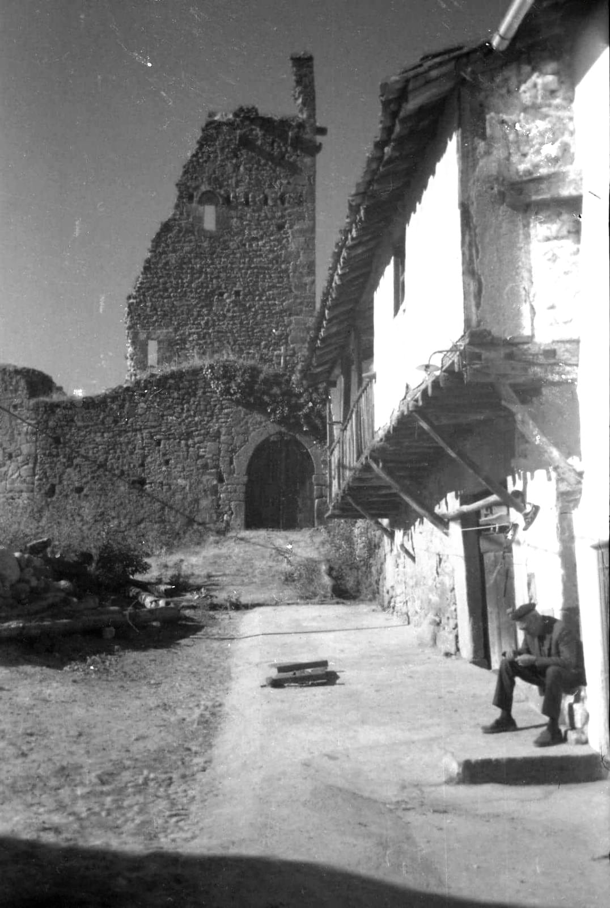
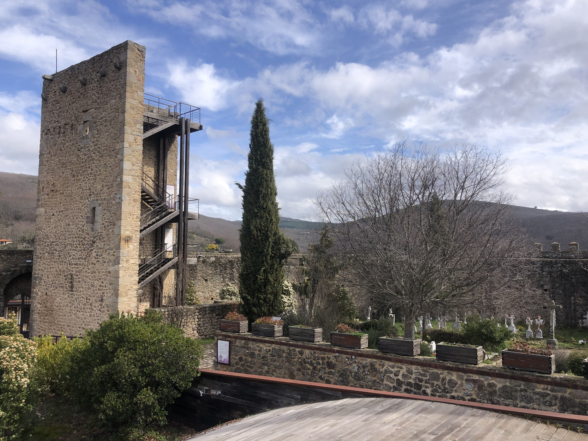

Acércate a la torre del castillo para comenzar tu búsqueda.
O escribe el nombre de la parada:

Entrada: Puerta del siglo XV sobre fortificación anterior del siglo XIII. Hoy sede del Centro de Interpretación de la Biosfera.
Más info

Torre: El rayo destruyó la última torre en pie en el siglo XX. Hoy quedan dos lienzos de muralla con restos de almenas.
Más info

Vista: Mirador natural sobre el valle. Desde 1834 es cementerio municipal.
Más info
Reto Visual: Observa con atención
1. ¿Qué marcó la torre del homenaje?
🪶 Haz clic para leer la nota antigua de Gonzalo
“A quien busque el corazón del castillo, le dejo un eco grabado en la piedra. Cuatro símbolos brillaron ante mí aquella noche…
Recordad el orden de los guardianes:
el Escudo, la Espada, la Luz y la Cruz.”
🕯️ Secuencia Mágica
Observa los símbolos iluminados y repite la secuencia narrada:
🛡️
🕯️
✝️
⚔️
Quiz Histórico
1. ¿En qué siglo fue construido el castillo?
2. ¿Qué función tuvo durante el siglo XIX?
3. ¿Qué se instaló en el castillo en el siglo XXI?
QR oculto: Se rumorea que Gonzalo grabó un símbolo detrás de una piedra suelta junto al arco. Si lo encuentras... escanea.